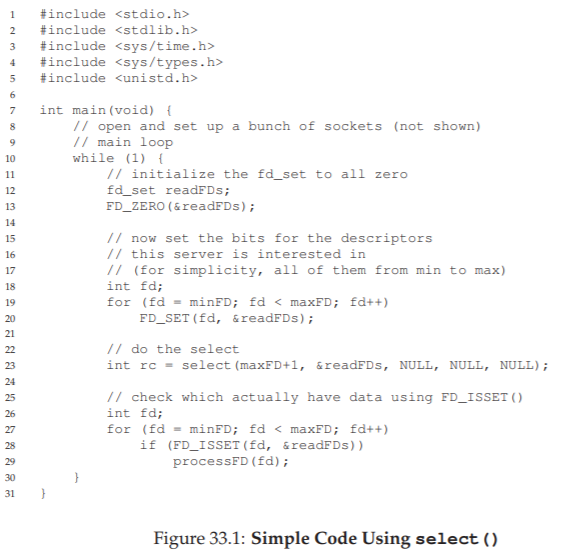

33. Lập trình đồng thời dựa trên sự kiện (Nâng cao)
Cho đến nay, chúng ta đã viết về concurrency (tính đồng thời) như thể cách duy nhất để xây dựng các ứng dụng đồng thời là sử dụng threads (luồng). Giống như nhiều điều khác trong cuộc sống, điều này không hoàn toàn đúng. Cụ thể, một phong cách lập trình đồng thời khác thường được sử dụng trong cả các ứng dụng dựa trên GUI (giao diện đồ họa người dùng)^[1] [O96] cũng như một số loại internet servers (máy chủ Internet) [PDZ99]. Phong cách này, được gọi là event-based concurrency (đồng thời dựa trên sự kiện), đã trở nên phổ biến trong một số hệ thống hiện đại, bao gồm các framework phía server như node.js [N13], nhưng nguồn gốc của nó bắt đầu từ các hệ thống C/UNIX mà chúng ta sẽ thảo luận bên dưới.
Vấn đề mà event-based concurrency giải quyết là hai mặt. Thứ nhất, việc quản lý concurrency một cách chính xác trong các ứng dụng multi-threaded (đa luồng) có thể rất thách thức; như chúng ta đã thảo luận, việc thiếu locks (khóa), deadlock (bế tắc) và các vấn đề nghiêm trọng khác có thể phát sinh. Thứ hai, trong một ứng dụng multi-threaded, lập trình viên hầu như không có hoặc hoàn toàn không có quyền kiểm soát việc scheduling (lập lịch) tại một thời điểm nhất định; thay vào đó, lập trình viên chỉ đơn giản tạo ra các threads và hy vọng rằng hệ điều hành (OS) bên dưới sẽ lập lịch chúng một cách hợp lý trên các CPU khả dụng. Do khó khăn trong việc xây dựng một general-purpose scheduler (bộ lập lịch đa dụng) hoạt động tốt trong mọi trường hợp và với mọi loại tải công việc, đôi khi OS sẽ lập lịch công việc theo cách kém tối ưu. Và vì thế, chúng ta có...
THE CRUX: LÀM THẾ NÀO ĐỂ XÂY DỰNG MÁY CHỦ ĐỒNG THỜI MÀ KHÔNG CẦN THREADS
Làm thế nào chúng ta có thể xây dựng một concurrent server (máy chủ đồng thời) mà không sử dụng threads, từ đó giữ quyền kiểm soát concurrency cũng như tránh một số vấn đề thường gặp trong các ứng dụng multi-threaded?
33.1 Ý tưởng cơ bản: Event Loop
Cách tiếp cận cơ bản mà chúng ta sẽ sử dụng, như đã nêu ở trên, được gọi là event-based concurrency. Cách tiếp cận này khá đơn giản: bạn chỉ cần chờ một điều gì đó (tức là một “event” – sự kiện) xảy ra; khi nó xảy ra, bạn kiểm tra loại sự kiện đó là gì và thực hiện một lượng nhỏ công việc cần thiết (có thể bao gồm việc gửi yêu cầu I/O, hoặc scheduling các sự kiện khác để xử lý trong tương lai, v.v.). Và hết!
Trước khi đi sâu vào chi tiết, hãy cùng xem một event-based server (máy chủ dựa trên sự kiện) điển hình trông như thế nào. Các ứng dụng như vậy được xây dựng xoay quanh một cấu trúc đơn giản gọi là event loop (vòng lặp sự kiện). Mã giả (pseudocode) cho một event loop như sau:
while (1) {
events = getEvents();
for (e in events)
processEvent(e);
}
Thực sự đơn giản như vậy. Vòng lặp chính chỉ chờ một việc gì đó để làm (bằng cách gọi getEvents() trong đoạn code trên) và sau đó, với mỗi sự kiện được trả về, xử lý chúng lần lượt từng cái một; đoạn code xử lý mỗi sự kiện được gọi là event handler (trình xử lý sự kiện). Điều quan trọng là, khi một handler xử lý một sự kiện, đó là hoạt động duy nhất đang diễn ra trong hệ thống; do đó, việc quyết định sự kiện nào sẽ được xử lý tiếp theo tương đương với scheduling. Quyền kiểm soát tường minh đối với scheduling này là một trong những ưu điểm cơ bản của phương pháp event-based.
Tuy nhiên, phần thảo luận này để lại cho chúng ta một câu hỏi lớn hơn: chính xác thì một event-based server xác định các sự kiện đang diễn ra như thế nào, đặc biệt là đối với network I/O (I/O mạng) và disk I/O (I/O đĩa)? Cụ thể, làm thế nào một event server có thể biết rằng một thông điệp đã đến với nó?
^[1]: GUI (Graphical User Interface) – Giao diện đồ họa người dùng, cho phép người dùng tương tác với hệ thống thông qua các thành phần trực quan như cửa sổ, nút bấm, biểu tượng.
33.2 Một API quan trọng: select() (hoặc poll())
Với event loop (vòng lặp sự kiện) cơ bản đã được đề cập, bước tiếp theo chúng ta cần giải quyết là câu hỏi: làm thế nào để nhận các sự kiện? Trong hầu hết các hệ thống, một API cơ bản có sẵn thông qua system call (call hệ thống) select() hoặc poll().
Những interface (giao diện lập trình) này cho phép một chương trình thực hiện một việc đơn giản: kiểm tra xem có I/O (nhập/xuất) đến nào cần được xử lý hay không. Ví dụ, hãy tưởng tượng một ứng dụng mạng (chẳng hạn như web server) muốn kiểm tra xem có gói tin mạng nào đã đến để xử lý hay chưa. Các system call này cho phép bạn làm chính xác điều đó.
Lấy select() làm ví dụ. Trang manual (trang hướng dẫn sử dụng) trên macOS mô tả API này như sau:
int select(int nfds,
fd_set *restrict readfds,
fd_set *restrict writefds,
fd_set *restrict errorfds,
struct timeval *restrict timeout);
ASIDE: BLOCKING VS. NON-BLOCKING INTERFACES
Blocking (hay synchronous – đồng bộ) interfaces thực hiện toàn bộ công việc của chúng trước khi trả quyền điều khiển về cho hàm gọi; non-blocking (hay asynchronous – bất đồng bộ) interfaces bắt đầu một công việc nhưng trả về ngay lập tức, cho phép phần công việc còn lại được thực hiện ở chế độ nền.
Thủ phạm phổ biến nhất gây ra blocking là một dạng I/O nào đó. Ví dụ, nếu một call hàm cần đọc dữ liệu từ đĩa để hoàn tất, nó có thể bị block, chờ cho đến khi yêu cầu I/O gửi đến đĩa hoàn thành và trả dữ liệu về.
Non-blocking interfaces có thể được sử dụng trong bất kỳ phong cách lập trình nào (ví dụ: với threads), nhưng là yếu tố thiết yếu trong phương pháp event-based, vì một call bị block sẽ làm dừng toàn bộ tiến trình xử lý.
Mô tả thực tế từ man page: select() kiểm tra các tập hợp I/O descriptor (bộ mô tả I/O) có địa chỉ được truyền vào readfds, writefds và errorfds để xem liệu một số descriptor trong đó có sẵn sàng để đọc, sẵn sàng để ghi, hoặc đang có một điều kiện bất thường đang chờ xử lý hay không. select() sẽ kiểm tra các descriptor từ 0 đến nfds-1 trong mỗi tập hợp. Khi trả về, select() thay thế các tập hợp descriptor đã cho bằng các tập hợp con chỉ bao gồm những descriptor sẵn sàng cho thao tác được yêu cầu. select() trả về tổng số descriptor sẵn sàng trong tất cả các tập hợp.
Một vài điểm cần lưu ý về select():
- Thứ nhất,
select()cho phép bạn kiểm tra xem descriptor có thể đọc được hay ghi được. Khả năng đọc cho phép server xác định rằng một gói tin mới đã đến và cần được xử lý, trong khi khả năng ghi cho phép server biết khi nào có thể gửi phản hồi (tức là hàng đợi gửi đi chưa đầy). - Thứ hai, lưu ý đối số
timeout. Một cách sử dụng phổ biến là đặttimeoutthànhNULL, khiếnselect()block vô thời hạn cho đến khi một descriptor sẵn sàng. Tuy nhiên, các server mạnh mẽ hơn thường chỉ định một loại timeout nào đó; một kỹ thuật phổ biến là đặt timeout bằng 0, từ đó khiến callselect()trả về ngay lập tức.
System call poll() khá giống với select(). Xem man page của nó hoặc tài liệu của Stevens và Rago [SR05] để biết chi tiết.
Dù sử dụng cách nào, các primitive (nguyên thủy) cơ bản này cung cấp cho chúng ta một cách để xây dựng non-blocking event loop (vòng lặp sự kiện không chặn), vòng lặp này chỉ đơn giản kiểm tra các gói tin đến, đọc từ các socket có chứa thông điệp, và phản hồi khi cần thiết.
33.3 Sử dụng select()
Để làm rõ hơn, hãy xem cách sử dụng select() để xác định những network descriptor (bộ mô tả mạng) nào có thông điệp đến. Hình 33.1 dưới đây minh họa một ví dụ đơn giản.

Hình 33.1: Mã nguồn đơn giản sử dụng select()
Mã nguồn này thực tế khá dễ hiểu. Sau một số bước khởi tạo, server đi vào một vòng lặp vô hạn. Bên trong vòng lặp, nó sử dụng macro FD_ZERO() để xóa tập hợp file descriptor (bộ mô tả tệp) hiện tại, sau đó dùng FD_SET() để thêm tất cả các file descriptor từ minFD đến maxFD vào tập hợp. Tập hợp các descriptor này có thể đại diện, ví dụ, cho tất cả các network socket (socket mạng) mà server đang theo dõi. Cuối cùng, server gọi select() để kiểm tra kết nối nào có dữ liệu sẵn sàng. Sau đó, bằng cách sử dụng FD_ISSET() trong một vòng lặp, event server (máy chủ dựa trên sự kiện) có thể xác định descriptor nào đã sẵn sàng dữ liệu và xử lý dữ liệu đến.
Tất nhiên, một server thực tế sẽ phức tạp hơn nhiều, và cần thêm logic để xử lý việc gửi thông điệp, thực hiện disk I/O (I/O đĩa), và nhiều chi tiết khác. Để biết thêm thông tin, xem Stevens và Rago [SR05] để tìm hiểu về API, hoặc Pai et al. và Welsh et al. để có cái nhìn tổng quan về luồng xử lý của các event-based server [PDZ99, WCB01].
TIP: ĐỪNG ĐỂ BLOCK TRONG EVENT-BASED SERVER
Event-based server cho phép kiểm soát chi tiết việc scheduling (lập lịch) các tác vụ. Tuy nhiên, để duy trì khả năng kiểm soát này, tuyệt đối không được thực hiện bất kỳ call nào khiến tiến trình của hàm gọi bị block; vi phạm nguyên tắc này sẽ dẫn đến việc event-based server bị treo, khách hàng (client) bị gián đoạn, và khiến người khác nghi ngờ liệu bạn có thực sự đọc phần này của sách hay không.
33.4 Tại sao đơn giản hơn? Không cần Locks
Với một CPU đơn và một ứng dụng event-based, các vấn đề thường gặp trong lập trình đồng thời (concurrent programming) sẽ không còn. Cụ thể, vì chỉ có một sự kiện được xử lý tại một thời điểm, không cần phải acquire hoặc release locks (khóa); event-based server không thể bị gián đoạn bởi một thread khác vì nó hoàn toàn chạy ở chế độ single-threaded (đơn luồng). Do đó, các lỗi concurrency phổ biến trong chương trình đa luồng sẽ không xuất hiện trong phương pháp event-based cơ bản.
33.5 Một vấn đề: Blocking System Calls
Cho đến giờ, lập trình event-based nghe có vẻ rất tuyệt, đúng không? Bạn lập trình một vòng lặp đơn giản và xử lý các sự kiện khi chúng xuất hiện. Bạn thậm chí không cần nghĩ đến việc dùng lock! Nhưng có một vấn đề: điều gì xảy ra nếu một sự kiện yêu cầu bạn thực hiện một system call (call hệ thống) có thể bị block?
Ví dụ, hãy tưởng tượng một yêu cầu từ client gửi đến server để đọc một tệp từ đĩa và trả nội dung về cho client (giống như một yêu cầu HTTP đơn giản). Để xử lý yêu cầu này, một event handler (trình xử lý sự kiện) cuối cùng sẽ phải gọi system call open() để mở tệp, sau đó là một loạt call read() để đọc tệp. Khi tệp đã được đọc vào bộ nhớ, server có thể bắt đầu gửi kết quả về cho client.
Cả open() và read() đều có thể gửi yêu cầu I/O đến hệ thống lưu trữ (nếu metadata hoặc dữ liệu cần thiết chưa có sẵn trong bộ nhớ), và do đó có thể mất nhiều thời gian để hoàn tất. Với một thread-based server (máy chủ dựa trên luồng), điều này không phải vấn đề: trong khi thread thực hiện yêu cầu I/O bị treo (chờ I/O hoàn tất), các thread khác vẫn có thể chạy, cho phép server tiếp tục xử lý. Thực tế, sự chồng lấp tự nhiên giữa I/O và tính toán khác chính là lý do khiến lập trình đa luồng trở nên tự nhiên và dễ hiểu.
Tuy nhiên, với phương pháp event-based, không có thread nào khác để chạy: chỉ có vòng lặp sự kiện chính. Điều này có nghĩa là nếu một event handler thực hiện một call bị block, toàn bộ server sẽ bị block cho đến khi call đó hoàn tất. Khi event loop bị block, hệ thống sẽ ngồi chờ, gây lãng phí tài nguyên nghiêm trọng. Vì vậy, chúng ta có một nguyên tắc bắt buộc trong hệ thống event-based: không được phép có call blocking.
33.6 Giải pháp: Asynchronous I/O
Để vượt qua giới hạn này, nhiều hệ điều hành hiện đại đã giới thiệu các phương thức mới để gửi yêu cầu I/O đến hệ thống đĩa, được gọi chung là asynchronous I/O (I/O bất đồng bộ). Các interface này cho phép ứng dụng gửi yêu cầu I/O và trả quyền điều khiển ngay lập tức cho hàm gọi, trước khi I/O hoàn tất; các interface bổ sung cho phép ứng dụng xác định xem các I/O đã hoàn tất hay chưa.
Ví dụ, hãy xem interface được cung cấp trên macOS (các hệ thống khác có API tương tự). Các API này xoay quanh một cấu trúc cơ bản, struct aiocb hay còn gọi là AIO control block (khối điều khiển AIO). Phiên bản đơn giản hóa của cấu trúc này như sau (xem man page để biết thêm chi tiết):
struct aiocb {
int aio_fildes; // File descriptor
off_t aio_offset; // File offset
volatile void *aio_buf; // Location of buffer
size_t aio_nbytes; // Length of transfer
};
Để thực hiện một thao tác đọc bất đồng bộ từ tệp, ứng dụng cần điền vào cấu trúc này các thông tin liên quan: file descriptor của tệp cần đọc (aio_fildes), vị trí offset trong tệp (aio_offset), độ dài yêu cầu (aio_nbytes), và cuối cùng là vị trí bộ nhớ đích để sao chép dữ liệu đọc được (aio_buf).
Sau khi cấu trúc này được điền đầy đủ, ứng dụng phải gọi API đọc bất đồng bộ; trên macOS, API này đơn giản là:
int aio_read(struct aiocb *aiocbp);
Lời gọi này sẽ cố gắng gửi yêu cầu I/O; nếu thành công, nó trả về ngay lập tức và ứng dụng (tức event-based server) có thể tiếp tục công việc khác.
Tuy nhiên, vẫn còn một phần quan trọng cần giải quyết: làm thế nào để biết khi nào một I/O đã hoàn tất, và do đó bộ đệm (aio_buf) đã chứa dữ liệu được yêu cầu?
Cần thêm một API nữa. Trên macOS, API này được gọi (có phần gây nhầm lẫn) là aio_error():
int aio_error(const struct aiocb *aiocbp);
System call này kiểm tra xem yêu cầu được tham chiếu bởi aiocbp đã hoàn tất hay chưa. Nếu đã hoàn tất, hàm trả về thành công (giá trị 0); nếu chưa, nó trả về EINPROGRESS. Do đó, với mỗi I/O bất đồng bộ đang chờ, ứng dụng có thể định kỳ gọi aio_error() để kiểm tra trạng thái.
Một điều bạn có thể nhận thấy là việc kiểm tra I/O đã hoàn tất khá phiền toái; nếu một chương trình có hàng chục hoặc hàng trăm I/O đang chờ tại một thời điểm, liệu nó nên liên tục kiểm tra từng cái, hay chờ một lúc rồi mới kiểm tra, hay…?
Để khắc phục vấn đề này, một số hệ thống cung cấp phương pháp dựa trên interrupt (ngắt). Phương pháp này sử dụng tín hiệu UNIX để thông báo cho ứng dụng khi một I/O bất đồng bộ hoàn tất, loại bỏ nhu cầu phải liên tục hỏi hệ thống. Vấn đề polling so với interrupt này cũng xuất hiện ở các thiết bị phần cứng, như bạn sẽ thấy (hoặc đã thấy) trong chương về thiết bị I/O.
Trong các hệ thống không hỗ trợ asynchronous I/O, phương pháp event-based thuần túy không thể triển khai được. Tuy nhiên, các nhà nghiên cứu đã nghĩ ra những phương pháp thay thế hoạt động khá hiệu quả. Ví dụ, Pai et al. [PDZ99] mô tả một phương pháp lai, trong đó sự kiện được dùng để xử lý gói tin mạng, và một thread pool (bể luồng) được dùng để quản lý các I/O đang chờ. Bạn có thể đọc bài báo của họ để biết chi tiết.
33.7 Một vấn đề khác: Quản lý trạng thái (State Management)
Một vấn đề khác với phương pháp event-based (dựa trên sự kiện) là mã nguồn kiểu này thường phức tạp hơn để viết so với mã nguồn thread-based (dựa trên luồng) truyền thống. Lý do như sau: khi một event handler (trình xử lý sự kiện) thực hiện một thao tác asynchronous I/O (I/O bất đồng bộ), nó phải đóng gói một số trạng thái của chương trình để event handler tiếp theo có thể sử dụng khi thao tác I/O đó cuối cùng hoàn tất; công việc bổ sung này không cần thiết trong các chương trình thread-based, vì trạng thái mà chương trình cần đã nằm trên stack (ngăn xếp) của thread. Adya và cộng sự gọi công việc này là manual stack management (quản lý ngăn xếp thủ công), và nó là một phần cơ bản của lập trình event-based [A+02].
Để làm rõ hơn, hãy xem một ví dụ đơn giản trong đó một thread-based server (máy chủ dựa trên luồng) cần đọc từ một file descriptor (fd) và, khi hoàn tất, ghi dữ liệu đã đọc từ tệp đó vào một network socket descriptor (sd). Mã nguồn (bỏ qua phần kiểm tra lỗi) như sau:
int rc = read(fd, buffer, size);
rc = write(sd, buffer, size);
Như bạn thấy, trong một chương trình multi-threaded (đa luồng), việc thực hiện công việc kiểu này là rất đơn giản; khi read() trả về, mã nguồn ngay lập tức biết socket nào cần ghi dữ liệu vào vì thông tin đó đã có sẵn trên stack của thread (trong biến sd).
Trong một hệ thống event-based, mọi thứ không đơn giản như vậy. Để thực hiện cùng một tác vụ, trước tiên chúng ta sẽ thực hiện thao tác đọc bất đồng bộ, sử dụng các call AIO đã mô tả ở trên. Giả sử sau đó chúng ta định kỳ kiểm tra việc đọc đã hoàn tất hay chưa bằng call aio_error(); khi call này thông báo rằng việc đọc đã hoàn tất, làm thế nào để event-based server biết cần phải làm gì tiếp theo?
ASIDE: UNIX SIGNALS
Một hạ tầng lớn và thú vị được gọi là signals (tín hiệu) tồn tại trong tất cả các biến thể UNIX hiện đại. Ở mức đơn giản nhất, signal cung cấp một cách để giao tiếp với một process (tiến trình). Cụ thể, một signal có thể được gửi đến một ứng dụng; khi đó ứng dụng sẽ tạm dừng những gì nó đang làm để chạy một signal handler (trình xử lý tín hiệu), tức là một đoạn code trong ứng dụng để xử lý tín hiệu đó. Khi hoàn tất, tiến trình sẽ tiếp tục hành vi trước đó.
Mỗi signal có một tên, chẳng hạn nhưHUP(hang up),INT(interrupt),SEGV(segmentation violation), v.v.; xem man page để biết chi tiết. Thú vị là đôi khi chính kernel (nhân hệ điều hành) sẽ gửi tín hiệu. Ví dụ, khi chương trình của bạn gặp lỗi segmentation violation, OS sẽ gửi cho nó mộtSIGSEGV(thêm tiền tốSIGvào tên tín hiệu là cách đặt tên phổ biến); nếu chương trình của bạn được cấu hình để bắt tín hiệu đó, bạn có thể chạy một đoạn code để phản hồi hành vi lỗi này (hữu ích cho việc gỡ lỗi). Khi một tín hiệu được gửi đến một tiến trình không được cấu hình để xử lý tín hiệu đó, hành vi mặc định sẽ được thực thi; vớiSEGV, tiến trình sẽ bị kết thúc.
Dưới đây là một chương trình đơn giản chạy vòng lặp vô hạn, nhưng trước đó đã thiết lập một signal handler để bắtSIGHUP:void handle(int arg) { printf("stop wakin’ me up...\n"); } int main(int argc, char *argv[]) { signal(SIGHUP, handle); while (1) ; // doin’ nothin’ except catchin’ some sigs return 0; }Bạn có thể gửi tín hiệu đến chương trình này bằng công cụ dòng lệnh
kill(đúng, đây là một tên khá “mạnh bạo”). Việc này sẽ ngắt vòng lặpwhilechính trong chương trình và chạy đoạn code xử lýhandle():prompt> ./main & 36705 prompt> kill -HUP 36705 stop wakin’ me up... prompt> kill -HUP 36705 stop wakin’ me up...Còn rất nhiều điều để tìm hiểu về signals, đến mức một chương riêng, chứ chưa nói một trang, cũng chưa đủ. Như thường lệ, có một nguồn tài liệu tuyệt vời: Stevens và Rago [SR05]. Hãy đọc thêm nếu bạn quan tâm.
Giải pháp, như Adya và cộng sự [A+02] mô tả, là sử dụng một cấu trúc ngôn ngữ lập trình cũ được gọi là continuation [FHK84]. Nghe có vẻ phức tạp, nhưng ý tưởng khá đơn giản: về cơ bản, ghi lại thông tin cần thiết để hoàn tất xử lý sự kiện này vào một cấu trúc dữ liệu; khi sự kiện xảy ra (tức là khi disk I/O hoàn tất), tra cứu thông tin cần thiết và xử lý sự kiện.
Trong trường hợp cụ thể này, giải pháp sẽ là ghi lại socket descriptor (sd) vào một cấu trúc dữ liệu nào đó (ví dụ: hash table), được đánh chỉ mục bởi file descriptor (fd). Khi disk I/O hoàn tất, event handler sẽ sử dụng file descriptor để tra cứu continuation, từ đó trả về giá trị của socket descriptor cho hàm gọi. Tại thời điểm này (cuối cùng), server có thể thực hiện bước cuối cùng là ghi dữ liệu vào socket.
33.8 Điều gì vẫn còn khó khăn với Events
Có một số khó khăn khác với phương pháp event-based mà chúng ta cần đề cập. Ví dụ, khi hệ thống chuyển từ CPU đơn sang nhiều CPU, một phần sự đơn giản của phương pháp event-based biến mất. Cụ thể, để tận dụng nhiều hơn một CPU, event server phải chạy nhiều event handler song song; khi làm vậy, các vấn đề đồng bộ hóa thông thường (ví dụ: critical section – đoạn tới hạn) sẽ xuất hiện, và các giải pháp quen thuộc (ví dụ: locks) phải được áp dụng. Do đó, trên các hệ thống đa lõi hiện đại, việc xử lý sự kiện đơn giản mà không cần lock là không thể.
Một vấn đề khác với phương pháp event-based là nó không tích hợp tốt với một số loại hoạt động của hệ thống, chẳng hạn như paging (phân trang bộ nhớ). Ví dụ, nếu một event handler gặp page fault (lỗi trang), nó sẽ bị block, và do đó server sẽ không thể tiếp tục cho đến khi lỗi trang được xử lý xong. Mặc dù server đã được thiết kế để tránh blocking tường minh, nhưng loại blocking ngầm này do page fault gây ra rất khó tránh và có thể dẫn đến các vấn đề hiệu năng nghiêm trọng khi xảy ra thường xuyên.
Vấn đề thứ ba là mã nguồn event-based có thể khó bảo trì theo thời gian, vì ngữ nghĩa chính xác của các hàm có thể thay đổi [A+02]. Ví dụ, nếu một hàm thay đổi từ non-blocking sang blocking, event handler gọi hàm đó cũng phải thay đổi để thích ứng với bản chất mới của nó, bằng cách tách mã thành hai phần. Vì blocking gây hậu quả nghiêm trọng cho event-based server, lập trình viên phải luôn cảnh giác với những thay đổi về ngữ nghĩa của API mà mỗi sự kiện sử dụng.
Cuối cùng, mặc dù asynchronous disk I/O hiện đã khả dụng trên hầu hết các nền tảng, nhưng phải mất một thời gian dài mới đạt được [PDZ99], và nó chưa bao giờ tích hợp hoàn toàn với asynchronous network I/O theo cách đơn giản và thống nhất như mong muốn. Ví dụ, mặc dù lý tưởng là chỉ cần sử dụng interface select() để quản lý tất cả các I/O đang chờ, nhưng trên thực tế thường phải kết hợp select() cho mạng và các call AIO cho disk I/O.
33.9 Tóm tắt
Chúng ta đã trình bày một phần giới thiệu cơ bản về một phong cách concurrency (lập trình đồng thời) khác dựa trên sự kiện. Event-based server trao quyền kiểm soát scheduling (lập lịch) cho chính ứng dụng, nhưng phải trả giá bằng sự phức tạp và khó khăn khi tích hợp với các khía cạnh khác của hệ thống hiện đại (ví dụ: paging). Do những thách thức này, chưa có một phương pháp nào nổi lên như là tối ưu nhất; vì vậy, cả threads (luồng) và events (sự kiện) nhiều khả năng sẽ tiếp tục tồn tại song song như hai cách tiếp cận khác nhau cho cùng một vấn đề concurrency (lập trình đồng thời) trong nhiều năm tới.
Hãy đọc một số bài báo nghiên cứu (ví dụ: [A+02, PDZ99, vB+03, WCB01]) hoặc, tốt hơn nữa, hãy tự viết một số mã nguồn event-based để tìm hiểu sâu hơn.